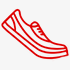

Делимся опытомНаши сотрудники всегда готовы поделиться своим опытом, так как сами бегают полумарафоны, переплыли Босфор, готовятся к соревнованиям по триатлону!
Заботимся о здоровьеМы работаем для того, чтобы Ваши занятия спортом шли на пользу Вашему здоровью и были в радость Вам и Вашим близким!
Учим бегатьПомогаем с обучением
правильной технике бега! Дружим с крупнейшей школой бега в России - I LOVE RUNNING.
Получите бесплатную консультацию по подбору пульсометра
Просто заполните форму заявки и мы перезвоним вам в течении 10 минут
Каталог пульсометров
Для фитнеса
для бега
для триатлона
Пульсометр Polar FT1
Для первых шагов в тренировках, основанных на сердечном ритме